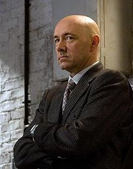

藍帶國際學院（巴黎校區）高級廚藝大文憑 1996
法國餐廳Chez Les Copains老板兼總廚,美食作家和烹飪導師
稍有留意飲食或烹飪節目的朋友，對Bonnie So這名字應該不會陌，西貢原住民Bonnie So
1991年只身來到法國開眼界，在朋友提議下，她到法國最富盛名的藍帶國際學院(巴黎校區)學習廚藝。
從1996年在藍帶國際學院巴黎校區畢業的那天起，她著迷于意想不到的廚藝世界與傳統的結合，讓她時時都能感受到無比的驚喜。
藍帶國際學院（巴黎校區）高級廚藝大證書 2004
上海雅居樂萬豪酒店的行政總廚
2003年，當亞歷山大決定報考藍帶巴黎校區的高級廚藝大文憑時，他的美食之旅啟程了。
精通多國語言的亞歷山大對于料理的熱情和探尋不同文化的欲望驅使他遠赴意大利和泰國尋求夢想，探索美食文化。
他的第一個職業角色始于他的家鄉，在那里工作了2年后來到了中國。2008年北京奧運會期間他被任命為國際奧委會、加拿大奧委會和NBC的廚師長。
在經歷了一個令人難以置信的成功經驗后，他來到了上海 Kings Kitchen成為了行政總廚，之后又服務于萬麗酒店。亞歷山大現在為上海雅居樂萬豪酒店的行政總廚。

藍帶國際學院（雪梨）料理文憑和甜點證書 2003
烏樹林老板兼主廚；我們創意工作團隊創辦者
經歷知名的藍帶國際學院(雪梨校區)的洗禮后，鐘莉婷回國和家人合開了她的第一間餐廳“烏樹林”,
地點就在水田中央，沒有華麗外觀、名人加持卻經常一位難求，至理名言：成功沒有秘訣，只是用心而已。
作為“烏樹林”的主廚，至今已是第九年了，她烹制出的歐風料理和甜點，有種學院派的雅致細膩，對自己要求甚高的她，看待烹飪工作始終懷抱著理想全神專注。

（圖中 左邊第四位）
藍帶國際學院（巴黎校區）高級廚藝大證書 1995
浦東四季酒店行政主廚
魏瑪．戈麥斯開始他的廚藝生涯源于參加了在哥倫比亞的麥地那舉行的美食節。
在美食節上他遇見了藍帶巴黎校區的教授帕特里克．特里安獲得靈感，于是決定報讀巴黎校區的廚藝大證書課程。
1995年在獲得藍帶廚藝大證書后，魏瑪繼續進修于多家著名的餐廳和酒店。
如Tours的阿爾蒂尼城堡酒店、法國小鎮阿維尼翁的Chateau Unang、伊蘇丹地區的科涅特酒店、沙泰勒的馬奇傳統度假屋酒店。
之後他成為巴黎餐廳The Guy Savoy的晚宴廚師長。
（圖中 左邊第五位）
藍帶國際學院（倫敦校區）料理文憑和甜點證書 1996
Eurochef 中國區域發展總監
丹尼爾．梅內塞斯是一位在亞洲料理中具有造詣的廚師，也是中式廚房和中式焙烤食品首屈一指的廚師。
17歲的他在新加坡開始了廚藝職業生涯，通過努力成為在烹飪技術領域的知名人士。
1996年藍帶國際學院倫敦校區畢業后，周游世界，被公認為烹飪創意和語言方面的專業人才。
他也被視為運用西方烹飪設備來推廣現代亞洲烹飪概念方面的先驅者之一。
曾經擔任伊萊克斯市場經理，剛加入Eurochef中國公司后，丹尼爾可謂是極少數運用西方設備烹飪亞洲美食的廚師。
他成功地幫助了15家大型餐廳、餐飲店、連鎖餐廳的建設，足跡遍布新加坡、菲律賓、馬來西亞、印度尼西亞、香港、臺灣和中國。
丹尼爾的座右銘是“烹飪是一種激情而不是時尚＂。
首頁
上一頁
下一頁